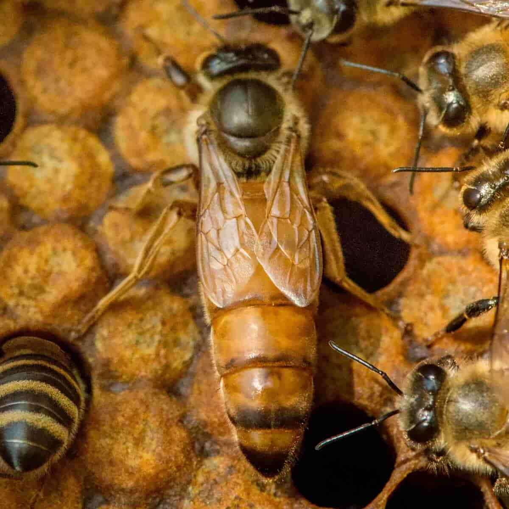
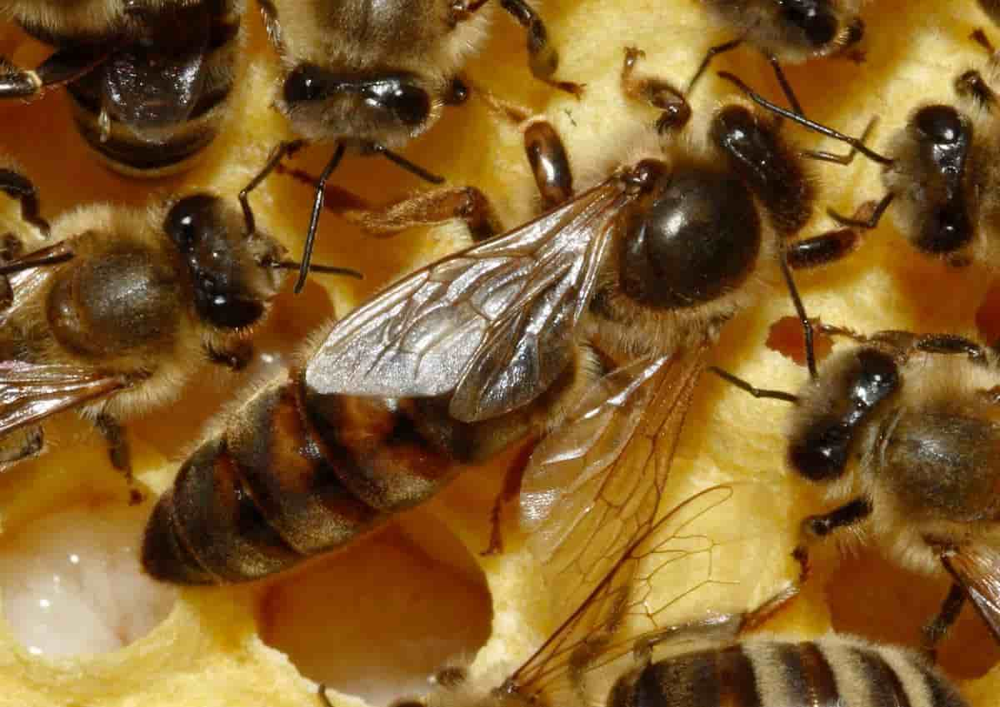

Пчелиная матка

Пчелиная матка является центральным и наиболее важным элементом в пчелиной колонии. Пчелиная матка отличается от других пчёл своим уникальным размером, формой и функциональностью. Вот подробное описание пчелиной матки и её роли в жизни пчелиной колонии.
Во-первых, пчелиная матка является единственной в улье. Она обладает значительно большим размером по сравнению с рабочими пчёлами и дронами. Её размер может достигать до 20 мм, что значительно превышает размеры других особей. Матка имеет длинное, удлиненное тело с узким животом и короткими крыльями. Она способна складывать яйца и является единственным источником оплодотворенных яиц в улье.
Роль пчелиной матки в пчелиной колонии весьма значима. Во-первых, её главная функция - это размножение. Матка откладывает яйца, из которых вырастают новые пчёлы. Она откладывает яйца в специальные ячейки сот, которые рабочие пчёлы затем ухаживают и выкармливают до момента их превращения в личинок. Без матки колония не сможет размножаться и, в конечном итоге, вымереть.
Кроме того, пчелиная матка играет ключевую роль в поддержании социального порядка в улье. Её присутствие поддерживает феромоны, которые помогают устранять конфликты и укреплять связи между пчёлами. Матка также участвует в регуляции разделения труда в колонии, направляя поведение рабочих пчёл и дронов.

Кроме того, пчелиная матка является объектом повышенного внимания и заботы пчеловода. Она нуждается в особом уходе и защите, так как от её состояния зависит продуктивность и здоровье всей колонии. Пчеловоды могут проводить регулярные инспекции улья, чтобы убедиться в наличии матки, её здоровье и продуктивность. В случае необходимости они также могут заменять старую матку на новую с целью повышения качества пчелиной популяции.
В заключение, пчелиная матка является неотъемлемой частью пчелиной колонии, играющей ключевую роль в её размножении, социальной организации и продуктивности. Её здоровье и качество имеют прямое влияние на состояние всей колонии, поэтому уход и защита матки являются одним из важнейших аспектов пчеловодства.